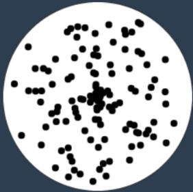
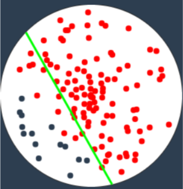

Machine learning is the study of computer
algorithms that improves automatically through
experience.
In this case the it is used to separate various points plotted in a region by color.
Question remains, how
does this example works ?
It's as follows :

Initially a circle is drawn, this is the region were the machine will
operate.
Later few ( n = 250) points are randomly
drawn on the region. The number n is arbitrary and it doesn't affect the results.
The location of these points is stored in a
array to later
feed to the learning algorithm (Let's call it ml for
now).

The ml first draws a random line called
'ml_line' (green in color), this line is not related to the
previous pseudo line and only has information about the points and their respective color.
So how does the machine train ?
For the ml_line, let's pre-decide that we want all red points on the left and blue on the right or vice-versa.
Next ml will check all the present line.
If they are as we decided then it is ignored and if not then it's
distance is calculated and stored in a variable called
'ml_error'
Now we have the distances of all the misplaced points as error, ml will now adjust the line by checking all the
possible cases by which it can move the line and the one that will produce the least error will be executed.